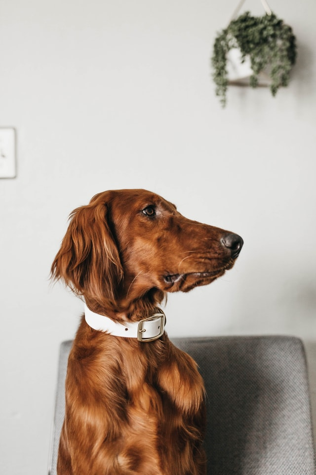
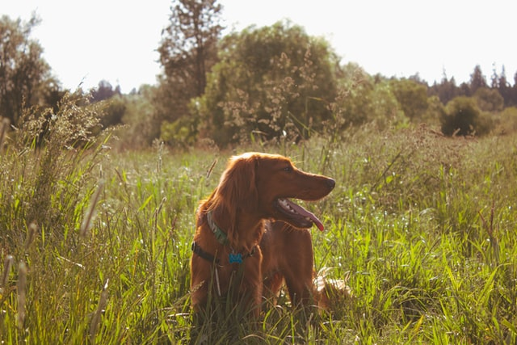
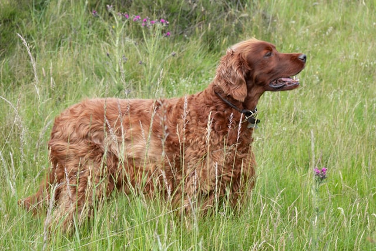

Tõu ajalugu
Iiri punane setter on aretatud Iirimaal jahikasutuskoeraks. Tõug on
välja kujunenud iiri puna-valgest setterist selles tõus esinenud
ühtlaselt punasevärvilistest tundmatuks jäänud isenditest. Juba 18.
sajandiks oli see tüüp omandanud selgelt äratuntavad jooned. Iiri
punaste setterite klubi (The Irish Red Setter Club) loodi aastal
1882 tõu propageerimiseks. Klubi koostas tõustandardi aastal 1886
ning hakkas samal ajal ka korraldama jahikatseid ning näitusi uue
tõustandardi järgi. 1998. aastal avaldas klubi tõukohased
tööeeskirjad. Tolleaegne tõustandard ning katsete eeskiri andsid
ettekirjutused tõu välimiku ning kasutusomaduste nõutavale
kombinatsioonile. Iiri punane setter on aastate jooksul kujunenud
tugeva kehaehitusega, terveks ja intelligentseks koeraks, kellel on
suurepärased kasutusomadused ja väga hea vastupidavus.
Tõu iseloomustus
Iiri setter on üldmuljelt jõuline ja atleetlik, kõrgetasemelise
kehaehituse ja leebe ilmega. Iseloomult innukas, energiline ja tundeline.
Hästi aretatud, sotsialiseeritud ja treenitud Iiri setteri tõugu koer on erakordselt armas ja kiinduv lemmikloom.
Kui nad peavad jagama kodu kaslastega, on hädavajalik varajane kokkupuude kassidega ja hoolikas järelevalve.
Kuna nad on äärmiselt sõbralikud, ei ole nad head valvekoerad, kuigi nad annavad märku külaliste kohalolekust.
Iiri setter jääb oma elu jooksul üsna mänguliseks – üks tema rohkem armastatud omadustest.
Koera võtmisel tuleb arvestada sellega, et tegemist on allergiaohtliku tõuga.
Iiri setter on kogenematule omanikule sobiv koer, kuid mõningane treening on kindlasti nõutav.
Koer on suur, vajab pidevat hoolitsemist ning naudib pikki jalutuskäike. Tõu eluiga on tavaliselt 11-12 aastat.


Tõu standardid
Iiri setteri karv on
sügavatoonilist kastanpruuni värvi, ilma mingisugusegi musta
varjundita. Mõnikord on neil valge värvimärgis rinnal, kurgualuses
ja varvastel või väike täht otsmikul, triip laubal, lauk koonul või
näopiirkonnas. Karvkate on siidine ja liibuv, sulgjate karvadega jalgadel, kõrvadel ja sabal.
Karv on selja pealt lühike ja moodustab rinnakule, käppadele, kõhu alla ja sabale narmastuse.
Siidine karv ei ole setteril ainult kena välimuse pärast, vaid oluline ka looduses liikumisel.
Nimelt, mida siledam karv, seda vähem kogub see endasse sodi ja oksi, mis hiljem pusadeks võivad muutuda.
Keskmise isase turjakõrgus on 58-67 cm. Emaste turjakõrgus on tavaliselt 55-62 cm.